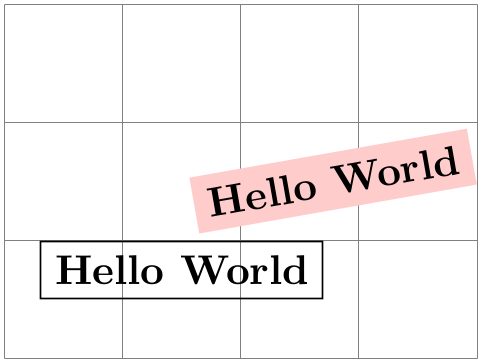
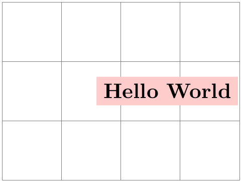
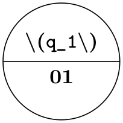
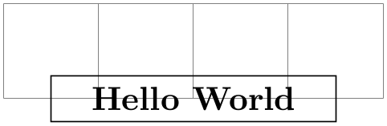
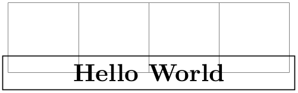
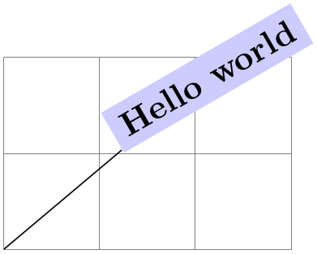
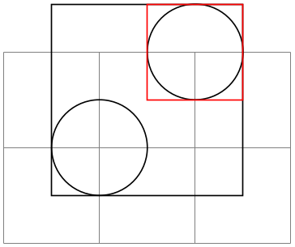
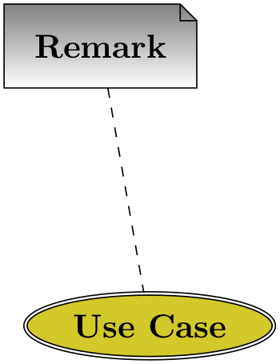

The TikZ and PGF Packages
Manual for version 3.1.9a
The Basic Layer
105 Nodes and Shapes
This section describes the shapes module.
\usepgfmodule{shapes} % LaTeX and plain TeX and pure pgf ¶
\usepgfmodule[shapes] % ConTeXt and pure pgf
This module defines commands both for creating nodes and for creating shapes. The package is loaded automatically by pgf, but you can load it manually if you have only included pgfcore.
105.1 Overview¶
pgf comes with a sophisticated set of commands for creating nodes and shapes. A node is a graphical object that consists (typically) of (one or more) text labels and some additional stroked or filled paths. Each node has a certain shape, which may be something simple like a rectangle or a circle, but it may also be something complicated like a uml class diagram (this shape is currently not implemented, though). Different nodes that have the same shape may look quite different, however, since shapes (need not) specify whether the shape path is stroked or filled.
105.1.1 Creating and Referencing Nodes¶
You create a node by calling the macro \pgfnode or the more general \pgfmultipartnode. This macro takes several parameters and draws the requested shape at a certain position. In addition, it will “remember” the node’s position within the current {pgfpicture}. You can then, later on, refer to the node’s position. Coordinate transformations are “fully supported”, which means that if you used coordinate transformations to shift or rotate the shape of a node, the node’s position will still be correctly determined by pgf. This is not the case if you use canvas transformations instead.
105.1.2 Anchors¶
An important property of a node or a shape in general are its anchors. Anchors are “important” positions in a shape. For example, the center anchor lies at the center of a shape, the north anchor is usually “at the top, in the middle” of a shape, the text anchor is the lower left corner of the shape’s text label (if present), and so on.
Anchors are important both when you create a node and when you reference it. When you create a node, you specify the node’s “position” by asking pgf to place the shape in such a way that a certain anchor lies at a certain point. For example, you might ask that the node is placed such that the north anchor is at the origin. This will effectively cause the node to be placed below the origin.
When you reference a node, you always reference an anchor of the node. For example, when you request the “north anchor of the node just placed” you will get the origin. However, you can also request the “south anchor of this node”, which will give you a point somewhere below the origin. When a coordinate transformation was in force at the time of creation of a node, all anchors are also transformed accordingly.
105.1.3 Layers of a Shape¶
The simplest shape, the coordinate, has just one anchor, namely the center, and a label (which is usually empty). More complicated shapes like the rectangle shape also have a background path. This is a pgf-path that is defined by the shape. The shape does not prescribe what should happen with the path: When a node is created, this path may be stroked (resulting in a frame around the label), filled (resulting in a background color for the text), or just discarded.
Although most shapes consist just of a background path plus some label text, when a shape is drawn, up to seven different layers are drawn:
-
1. The “behind the background layer”. Unlike the background path, which can be used in different ways by different nodes, the graphic commands given for this layer will always stroke or always fill the path they construct. They might also insert some text that is “behind everything”.
-
2. The background path layer. How this path is used depends on the arguments of the \pgfnode command.
-
3. The “before the background path layer”. This layer works like the first one, only the commands of this layer are executed after the background path has been used (in whatever way the creator of the node chose).
-
4. The label layer. This layer inserts the node’s text box(es).
-
5. The “behind the foreground layer”. This layer, like the first layer, once more contains graphic commands that are “simply executed”.
-
6. The foreground path layer. This path is treated in the same way as the background path, only it is drawn after the label text has been drawn.
-
7. The “before the foreground layer”.
Which of these layers are actually used depends on the shape.
105.1.4 Node Parts¶
A shape typically does not consist only of different background and foreground paths, but it may also have text labels. Indeed, for many shapes the text labels are the more important part of the shape.
Most shapes will have only one text label. In this case, this text label is simply passed as a parameter to the \pgfnode command. When the node is drawn, the text label is shifted around such that its lower left corner is at the text anchor of the node.
More complicated shapes may have more than one text label. Nodes of such shapes are called multipart nodes. The different node parts are simply the different text labels. For example, a uml class shape might have a class name part, a method part and an attributes part. Indeed, single part nodes are a special case of multipart nodes: They only have one part named text.
When a shape is declared, you must specify the node parts. There is a simple command called \nodeparts that takes a list of the part names as input. When you create a node of a multipart shape, for each part of the node you must have set up a TeX-box containing the text of the part. For a part named XYZ you must set up the box \pgfnodepartXYZbox. The box will be placed at the anchor XYZ. See the description of \pgfmultipartnode for more details.
105.2 Creating Nodes¶
105.2.1 Creating Simple Nodes¶
\pgfnode{⟨shape⟩}{⟨anchor⟩}{⟨label text⟩}{⟨name⟩}{⟨path usage command⟩} ¶
This command creates a new node. The ⟨shape⟩ of the node must have been declared previously using \pgfdeclareshape.
The shape is shifted such that the ⟨anchor⟩ is at the origin. In order to place the shape somewhere else, use the coordinate transformation prior to calling this command.
The ⟨name⟩ is a name for later reference. If no name is given, nothing will be “saved” for the node, it will just be drawn.
The ⟨path usage command⟩ is executed for the background and the foreground path (if the shape defines them).

\begin{tikzpicture}
\draw[help lines] (0,0) grid
(4,3);
{
\pgftransformshift{\pgfpoint{1.5cm}{1cm}}
\pgfnode{rectangle}{north}{Hello
World}{hellonode}{\pgfusepath{stroke}}
}
{
\color{red!20}
\pgftransformrotate{10}
\pgftransformshift{\pgfpoint{3cm}{1cm}}
\pgfnode{rectangle}{center}
{\color{black}Hello
World}{hellonode}{\pgfusepath{fill}}
}
\end{tikzpicture}
As can be seen, all coordinate transformations are also applied to the text of the shape. Sometimes, it is desirable that the transformations are applied to the point where the shape will be anchored, but you do not wish the shape itself to be transformed. In this case, you should call \pgftransformresetnontranslations prior to calling the \pgfnode command.

\begin{tikzpicture}
\draw[help lines] (0,0) grid
(4,3);
{
\color{red!20}
\pgftransformrotate{10}
\pgftransformshift{\pgfpoint{3cm}{1cm}}
\pgftransformresetnontranslations
\pgfnode{rectangle}{center}
{\color{black}Hello
World}{hellonode}{\pgfusepath{fill}}
}
\end{tikzpicture}
The ⟨label text⟩ is typeset inside the TeX-box \pgfnodeparttextbox. This box is shown at the text anchor of the node, if the node has a text part. See the description of \pgfmultipartnode for details.
105.2.2 Creating Multi-Part Nodes¶
\pgfmultipartnode{⟨shape⟩}{⟨anchor⟩}{⟨name⟩}{⟨path usage command⟩} ¶
This command is the more general (and less user-friendly) version of the \pgfnode command. While the \pgfnode command can only be used for shapes that have a single part (which is the case for most shapes), this command can also be used with multi-part nodes.
When this command is called, for each node part of the node you must have set up one TeX-box. Suppose the shape has two parts: The text part and the lower part. Then, prior to calling \pgfmultipartnode, you must have set up the boxes \pgfnodeparttextbox and \pgfnodepartlowerbox. These boxes may contain any TeX-text. The shape code will then compute the positions of the shape’s anchors based on the sizes of the these shapes. Finally, when the node is drawn, the boxes are placed at the anchor positions text and lower.

\usetikzlibrary {shapes}
\setbox\pgfnodeparttextbox=\hbox{$q_1$}
\setbox\pgfnodepartlowerbox=\hbox{01}
\begin{pgfpicture}
\pgfmultipartnode{circle
split}{center}{my
state}{\pgfusepath{stroke}}
\end{pgfpicture}
Note: Be careful when using the \setbox command inside a {pgfpicture} command. You will have to use \pgfinterruptpath at the beginning of the box and \endpgfinterruptpath at the end of the box to make sure that the box is typeset correctly. In the above example this problem was sidestepped by moving the box construction outside the environment.
Note: It is not necessary to use \newbox for every node part name. Although you need a different box for each part of a single shape, two different shapes may very well use the same box even when the names of the parts are different. Suppose you have a circle split shape that has a lower part and you have a uml class shape that has a methods part. Then, in order to avoid exhausting TeX’s limited number of box registers, you can say
\newbox\pgfnodepartlowerbox
\let\pgfnodepartmethodsbox=\pgfnodepartlowerbox
Also, when you have a node part name with spaces like class name, it may be useful to create an alias:
\newbox\mybox
\expandafter\let\csname pgfnodepartclass
namebox\endcsname=\mybox
\pgfcoordinate{⟨name⟩}{⟨coordinate⟩} ¶
This command creates a node of shape coordinate at the given ⟨coordinate⟩. Exactly the same effect can be achieved using first a shift of the coordinate system to ⟨coordinate⟩, followed by creating a node of shape coordinate named ⟨name⟩. However, this command is easier and more natural to use and, more importantly, it is much faster.
\pgfnodealias{⟨new name⟩}{⟨existing node⟩} ¶
This command does not actually create a new node. Rather, it allows you to subsequently access the node ⟨existing node⟩ using the name ⟨new name⟩.
\pgfnoderename{⟨new name⟩}{⟨existing node⟩} ¶
This command renames an existing node.
There are a number of values that have an influence on the size of a node. These values are stored in the following keys.
/pgf/minimum width=⟨dimension⟩ (no default, initially 1pt)
alias /tikz/minimum width
This key stores the recommended minimum width of a shape. Thus, when a shape is drawn and when the shape’s width would be smaller than ⟨dimension⟩, the shape’s width is enlarged by adding some empty space.
Note that this value is just a recommendation. A shape may choose to ignore this key.

\begin{tikzpicture}
\draw[help lines] (-2,0) grid
(2,1);
\pgfset{minimum
width=3cm}
\pgfnode{rectangle}{center}{Hello
World}{}{\pgfusepath{stroke}}
\end{tikzpicture}
/pgf/minimum height=⟨dimension⟩ (no default, initially 1pt)
alias /tikz/minimum height
Works like /pgf/minimum width.
/pgf/minimum size=⟨dimension⟩(no default)
alias /tikz/minimum size
This style both /pgf/minimum width and /pgf/minimum height to ⟨dimension⟩.
/pgf/inner xsep=⟨dimension⟩ (no default, initially 0.3333em)
alias /tikz/inner xsep
This key stores the recommended horizontal inner separation between the label text and the background path. As before, this value is just a recommendation and a shape may choose to ignore this key.

\begin{tikzpicture}
\draw[help lines] (-2,0) grid
(2,1);
\pgfset{inner
xsep=1cm}
\pgfnode{rectangle}{center}{Hello
World}{}{\pgfusepath{stroke}}
\end{tikzpicture}
/pgf/inner ysep=⟨dimension⟩ (no default, initially 0.3333em)
alias /tikz/inner ysep
Works like /pgf/inner xsep.
/pgf/inner sep=⟨dimension⟩(no default)
alias /tikz/inner sep
This style sets both /pgf/inner xsep and /pgf/inner ysep to ⟨dimension⟩.
/pgf/outer xsep=⟨dimension⟩ (no default, initially .5\pgflinewidth)
alias /tikz/outer xsep
This key stores the recommended horizontal separation between the background path and the “outer anchors”. For example, if ⟨dimension⟩ is 1cm then the east anchor will be 1cm to the right of the right border of the background path. As before, this value is just a recommendation.
\begin{tikzpicture}
\draw[help lines] (-2,0) grid
(2,1);
\pgfset{outer
xsep=.5cm}
\pgfnode{rectangle}{center}{Hello
World}{x}{\pgfusepath{stroke}}
\pgfpathcircle{\pgfpointanchor{x}{north}}{2pt}
\pgfpathcircle{\pgfpointanchor{x}{south}}{2pt}
\pgfpathcircle{\pgfpointanchor{x}{east}}{2pt}
\pgfpathcircle{\pgfpointanchor{x}{west}}{2pt}
\pgfpathcircle{\pgfpointanchor{x}{north
east}}{2pt}
\pgfusepath{fill}
\end{tikzpicture}
/pgf/outer ysep=⟨dimension⟩ (no default, initially .5\pgflinewidth)
alias /tikz/outer ysep
Works like /pgf/outer xsep.
/pgf/outer sep=⟨dimension⟩(no default)
alias /tikz/outer sep
This style sets both /pgf/outer xsep and /pgf/outer ysep to ⟨dimension⟩.
105.2.3 Deferred Node Positioning¶
Normally, when a node is created using a command like \pgfnode, the node is immediately inserted into the current picture. In particular, you have no chance to change the position of a created node after it has been created. Using \pgfpositionnodelater in concert with \pgfpositionnodenow, you can create a node whose position is determined only at some later time.
\pgfpositionnodelater{⟨macro name⟩} ¶
This command is not a replacement for \pgfnode. Rather, when this command is used in a scope, all subsequent node creations in this scope will be affected in the following way: When a node is created, it is not inserted into the current picture. Instead, it is stored in the box \pgfpositionnodelaterbox. Furthermore, the node is not relevant for the picture’s bounding box, but a bounding box for the node is computed and stored in the macros \pgfpositionnodelaterminx to \pgfpositionnodelatermaxy. Then, the ⟨macro name⟩ is called with the following macros set up:
\pgfpositionnodelaterbox ¶
A box register number (0 currently) that stores the node’s paths and texts. You should move the contents of this box to a box of your choice inside ⟨macro name⟩.
\pgfpositionnodelatername ¶
The name of the just-created-node. This name will be the originally “desired” name of the box plus the fixed prefix not yet positionedPGFINTERNAL. The idea is to ensure that the original name is not inadvertently used before the node is actually positioned. When \pgfpositionnodenow is called, it will change the name to the original name.
\pgfpositionnodelaterminx ¶
The minimal \(x\)-position of a bounding box of the node. This bounding box refers to the node when it is positioned with the anchor at the origin. It is guaranteed, that this macro will contain a dimension in the format ⟨number⟩pt.
\pgfpositionnodelaterminy ¶
\pgfpositionnodelatermaxx ¶
\pgfpositionnodelatermaxy ¶
Once a late node has been created, you can add arbitrary code in the same picture. Then, at some later point, you call \pgfpositionnodenow to finally position the node at a given position. At this point, the above macros must have the exact same values they had when ⟨macro name⟩ was called. Note that the above macros are local to a scope that ends right after the call to ⟨macro name⟩, so it is your job to copy the values to safety inside ⟨macro name⟩.
The following two macros will also be set inside the call to ⟨macro name⟩, but they are only “informative” in the sense that you need not restore these macros when \pgfpositionnodenow is called.
\pgfpositionnodelaterpath ¶
This macro stores the path of the background of the node. See Section 120 for an overview of how these paths are encode.
By setting ⟨macro name⟩ to \relax (which is the default), you can switch off the whole mechanism. When a picture is interrupted, this is done automatically.
\pgfpositionnodenow{⟨coordinate⟩} ¶
This command is used to position a node that has previously been created using the command \pgfpositionnodelater. When \pgfpositionnodenow is called, the macros and boxes mentioned in the description of \pgfpositionnodenow must be set to the value they had when the ⟨macro name⟩ was called. Provided this is the case, this command will insert the box into the current picture, shifted by ⟨coordinate⟩. Then, the late code (see below) is called. Subsequently, you can refer to the node with its original name as if it had just been created.

\newbox\mybox
\def\mysaver{
\global\setbox\mybox=\box\pgfpositionnodelaterbox
\global\let\myname=\pgfpositionnodelatername
\global\let\myminx=\pgfpositionnodelaterminx
\global\let\myminy=\pgfpositionnodelaterminy
\global\let\mymaxx=\pgfpositionnodelatermaxx
\global\let\mymaxy=\pgfpositionnodelatermaxy
}
\begin{tikzpicture}
{
\pgfpositionnodelater{\mysaver}
\node [fill=blue!20,below,rotate=30] (hi) {Hello
world};
}
\draw [help lines] (0,0) grid
(3,2);
\let\pgfpositionnodelatername=\myname
\let\pgfpositionnodelaterminx=\myminx
\let\pgfpositionnodelaterminy=\myminy
\let\pgfpositionnodelatermaxx=\mymaxx
\let\pgfpositionnodelatermaxy=\mymaxy
\setbox\pgfpositionnodelaterbox=\box\mybox
\pgfpositionnodenow{\pgfqpoint{2cm}{2cm}}
\draw (hi) --
(0,0);
\end{tikzpicture}
\pgfnodepostsetupcode{⟨node name⟩}{⟨code⟩} ¶
When you call this macro inside a scope for which the \pgfpositionnodelater has been called, the ⟨code⟩ will be stored internally. Later, when the node named ⟨node name⟩ is actually positioned using \pgfpositionnodenow, the ⟨code⟩ will be executed. When this macro is called multiple times with the same ⟨node name⟩, the ⟨code⟩ accumulates. However, When \pgfpositionnodenow is called, the code stored for the node is cleared.
The main purpose of this mechanism is to allow TikZ to store so-called “late options” with a node that will be positioned only later.
105.3 Using Anchors¶
Each shape defines a set of anchors. We saw already that the anchors are used when the shape is drawn: the shape is placed in such a way that the given anchor is at the origin (which in turn is typically translated somewhere else).
One has to look up the set of anchors of each shape, there is no “default” set of anchors, except for the center anchor, which should always be present. Also, most shapes will declare anchors like north or east, but this is not guaranteed.
105.3.1 Referencing Anchors of Nodes in the Same Picture¶
Once a node has been defined, you can refer to its anchors using the following commands:
\pgfpointanchor{⟨node⟩}{⟨anchor⟩} ¶
This command is another “point command” like the commands described in Section 100. It returns the coordinate of the given ⟨anchor⟩ in the given ⟨node⟩. The command can be used in commands like \pgfpathmoveto.
\begin{pgfpicture}
\pgftransformrotate{30}
\pgfnode{rectangle}{center}{Hello
World!}{x}{\pgfusepath{stroke}}
\pgfpathcircle{\pgfpointanchor{x}{north}}{2pt}
\pgfpathcircle{\pgfpointanchor{x}{south}}{2pt}
\pgfpathcircle{\pgfpointanchor{x}{east}}{2pt}
\pgfpathcircle{\pgfpointanchor{x}{west}}{2pt}
\pgfpathcircle{\pgfpointanchor{x}{north
east}}{2pt}
\pgfusepath{fill}
\end{pgfpicture}
In the above example, you may have noticed something curious: The rotation transformation is still in force when the anchors are invoked, but it does not seem to have an effect. You might expect that the rotation should apply to the already rotated points once more.
However, \pgfpointanchor returns a point that takes the current transformation matrix into account: The inverse transformation to the current coordinate transformation is applied to an anchor point before returning it.
This behavior may seem a bit strange, but you will find it very natural in most cases. If you really want to apply a transformation to an anchor point (for example, to “shift it away” a little bit), you have to invoke \pgfpointanchor without any transformations in force. Here is an example:
\begin{pgfpicture}
\pgftransformrotate{30}
\pgfnode{rectangle}{center}{Hello
World!}{x}{\pgfusepath{stroke}}
{
\pgftransformreset
\pgfpointanchor{x}{east}
\xdef\mycoordinate{\noexpand\pgfpoint{\the\pgf@x}{\the\pgf@y}}
}
\pgfpathcircle{\mycoordinate}{2pt}
\pgfusepath{fill}
\end{pgfpicture}
A special situation arises when the ⟨node⟩ lies in a picture different from the current picture. In this case, if you have not told pgf that the picture should be “remembered”, the ⟨node⟩ will be treated as if it lay in the current picture. For example, if the ⟨node⟩ was at position \((3,2)\) in the original picture, it is treated as if it lay at position \((3,2)\) in the current picture. However, if you have told pgf to remember the picture position of the node’s picture and also of the current picture, then \pgfpointanchor will return a coordinate that corresponds to the position of the node’s anchor on the page, transformed into the current coordinate system. For examples and more details see Section 105.3.2.
\pgfpointshapeborder{⟨node⟩}{⟨point⟩} ¶
This command returns the point on the border of the shape that lies on a straight line from the center of the node to ⟨point⟩. For complex shapes it is not guaranteed that this point will actually lie on the border, it may be on the border of a “simplified” version of the shape.
\begin{pgfpicture}
\begin{pgfscope}
\pgftransformrotate{30}
\pgfnode{rectangle}{center}{Hello
World!}{x}{\pgfusepath{stroke}}
\end{pgfscope}
\pgfpathcircle{\pgfpointshapeborder{x}{\pgfpoint{2cm}{1cm}}}{2pt}
\pgfpathcircle{\pgfpoint{2cm}{1cm}}{2pt}
\pgfpathcircle{\pgfpointshapeborder{x}{\pgfpoint{-1cm}{1cm}}}{2pt}
\pgfpathcircle{\pgfpoint{-1cm}{1cm}}{2pt}
\pgfusepath{fill}
\end{pgfpicture}
Remark: If the given ⟨point⟩ is almost identical to the center of ⟨node⟩, the node center is returned and a warning message will be printed.
105.3.2 Referencing Anchors of Nodes in Different Pictures¶
As a picture is typeset, pgf keeps track of the positions of all nodes inside the picture. What pgf does not remember is the position of the picture itself on the page. Thus, if you define a node in one picture and then try to reference this node while another picture is typeset, pgf will only know the position of the nodes that you try to typeset inside the original picture, but it will not know where this picture lies. What is missing is the relative positioning of the two pictures.
To overcome this problem, you need to tell pgf that it should remember the position of pictures on a page. If these positions are remembered, then pgf can compute the offset between the pictures and make nodes in different pictures accessible.
Determining the positions of pictures on the page is, alas, not-so-easy. Because of this, pgf does not do so automatically. Rather, you have to proceed as follows:
-
1. You have to use a backend driver that supports position tracking. pdfTeX is one such driver, dvips currently is not.
-
2. You have to say \pgfrememberpicturepositiononpagetrue somewhere before or inside every picture
-
• in which you wish to reference a node and
-
• from which you wish to reference a node in another picture.
The second item is important since pgf does not only need to know the position of the picture in which the node you wish to reference lies, but it also needs to know where the current picture lies.
-
-
3. You typically have to run TeX twice (depending on the backend driver) since the position information typically gets written into an external file on the first run and is available only on the second run.
-
4. You have to switch off automatic bounding bound computations. The reason is that the node in the other picture should not influence the size of the bounding box of the current picture. You should say \pgfusepath{use as bounding box} before using a coordinate in another picture.
105.4 Special Nodes¶
There are several special nodes that are always defined and which you should not attempt to redefine.
Predefined node current bounding box ¶
This node is of shape rectangle. Unlike normal nodes, its size changes constantly and always reflects the size of the bounding box of the current picture. This means that, for instance, that
\pgfpointanchor{current
bounding
box}{south
east}
returns the lower left corner of the bounding box of the current picture.
Predefined node current path bounding box ¶
This node is also of shape rectangle. Its size is the size of the bounding box of the current path.
Predefined node current subpath start ¶
This node is of shape coordinate and is at the beginning of the current subpath. This is the position of the last move-to operation.
Predefined node current page ¶
This node is inside a virtual remembered picture. The size of this node is the size of the current page. This means that if you create a remembered picture and inside this picture you reference an anchor of this node, you reference an absolute position on the page. To demonstrate the effect, the following code puts some text in the lower left corner of the current page. Note that this works only if the backend driver supports it, otherwise the text is inserted right here.
\pgfrememberpicturepositiononpagetrue
\begin{pgfpicture}
\pgfusepath{use
as
bounding
box}
\pgftransformshift{\pgfpointanchor{current
page}{south
west}}
\pgftransformshift{\pgfpoint{1cm}{1cm}}
\pgftext[left,base]{
\textcolor{red}{
Text
absolutely
positioned
in
the
lower
left
corner.}
}
\end{pgfpicture}
There is also an option that allows you to create new special nodes quite similar to the above:
/pgf/local bounding box=⟨node name⟩(no default) ¶
alias /tikz/local bounding box
This defines a new node ⟨node name⟩ whose size is the bounding box around all objects in the current scope starting at the position where this option was given. After the end of the scope, the ⟨node name⟩ is still available. You can use this option to keep track of the size of a certain area. Note that excessive use of this option (keeping track of dozens of bounding boxes at the same time) will slow things down.

\usetikzlibrary {scopes}
\begin{tikzpicture}
\draw [help lines] (0,0) grid
(3,2);
{ [local bounding box=outer box]
\draw (1,1) circle
(.5) [local bounding box=inner box] (2,2) circle
(.5);
}
\draw (outer box.south west) rectangle
(outer box.north east);
\draw[red] (inner box.south west) rectangle
(inner box.north east);
\end{tikzpicture}
105.5 Declaring New Shapes¶
There are only three predefined shapes, see Section 70.2, so there must be some way of defining new shapes. Defining a shape is, unfortunately, a not-quite-trivial process. The reason is that shapes need to be both very flexible (their size will vary greatly according to circumstances) and they need to be constructed reasonably “fast”. pgf must be able to handle pictures with several hundreds of nodes and documents with thousands of nodes in total. It would not do if pgf had to compute and store, say, dozens of anchor positions for every node.
105.5.1 What Must Be Defined For a Shape?¶
In order to define a new shape, you must provide:
-
• a shape name,
-
• code for computing the saved anchors and saved dimensions,
-
• code for computing anchor positions in terms of the saved anchors,
-
• optionally code for the background path and foreground path,
-
• optionally code for things to be drawn before or behind the background and foreground paths.
-
• optionally a list of node parts.
105.5.2 Normal Anchors Versus Saved Anchors¶
Anchors are special places in a shape. For example, the north east anchor, which is a normal anchor, lies at the upper right corner of the rectangle shape, as does \northeast, which is a saved anchor. The difference is the following: saved anchors are computed and stored for each node, anchors are only computed as needed. The user only has access to the normal anchors, but a normal anchor can just “copy” or “pass through” the location of a saved anchor.
The idea behind all this is that a shape can declare a very large number of normal anchors, but when a node of this shape is created, these anchors are not actually computed. However, this causes a problem: When we wish to reference an anchor of a node at some later time, we must still be able to compute the position of the anchor. For this, we may need a lot of information: What was the transformation matrix that was in force when the node was created? What was the size of the text box? What were the values of the different separation dimensions? And so on.
To solve this problem, pgf will always compute the locations of all saved anchors and store these positions. Then, when an normal anchor position is requested later on, the anchor position can be given just from knowing where the locations of the saved anchors are.
As an example, consider the rectangle shape. For this shape two anchors are saved: The \northeast corner and the \southwest corner. A normal anchor like north west can now easily be expressed in terms of these coordinates: Take the \(x\)-position of the \southwest point and the \(y\)-position of the \northeast point. The rectangle shape currently defines 13 normal anchors, but needs only two saved anchors. Adding new anchors like a south south east anchor would not increase the memory and computation requirements of pictures.
All anchors (both saved and normal) are specified in a local shape coordinate space. This is also true for the background and foreground paths. The \pgfnode macro will automatically apply appropriate transformations to the coordinates so that the shape is shifted to the right anchor or otherwise transformed.
105.5.3 Command for Declaring New Shapes¶
The following command declares a new shape:
\pgfdeclareshape{⟨shape name⟩}{⟨shape specification⟩} ¶
This command declares a new shape named ⟨shape name⟩. The shape name can later be used in commands like \pgfnode.
The ⟨shape specification⟩ is some TeX code containing calls to special commands that are only defined inside the ⟨shape specification⟩ (similarly to commands like \draw that are only available inside the {tikzpicture} environment).
Example: Here is the code of the coordinate shape:
\pgfdeclareshape{coordinate}
{
\savedanchor\centerpoint{%
\pgf@x=.5\wd\pgfnodeparttextbox%
\pgf@y=.5\ht\pgfnodeparttextbox%
\advance\pgf@y by
-.5\dp\pgfnodeparttextbox%
}
\anchor{center}{\centerpoint}
\anchorborder{\centerpoint}
}
The special commands are explained next. In the examples given for the special commands a new shape will be constructed, which we might call simple rectangle. It should behave like the normal rectangle shape, only without bothering about the fine details like inner and outer separations. The skeleton for the shape is the following.
\pgfdeclareshape{simple
rectangle}{
...
}
\nodeparts{⟨list of node parts⟩} ¶
This command declares which parts make up nodes of this shape. A node part is a (possibly empty) text label that is drawn when a node of the shape is created.
By default, a shape has just one node part called text. However, there can be several node parts. For example, the circle split shape has two parts: the text part, which shows that the upper text, and a lower part, which shows the lower text. For the circle split shape the \nodeparts command was called with the argument {text,lower}.
When a multipart node is created, the text labels are drawn in the sequences listed in the ⟨list of node parts⟩. For each node part, you must have declared one anchor and the TeX-box of the part is placed at this anchor. For a node part called XYZ the TeX-box \pgfnodepartXYZbox is placed at anchor XYZ.
\savedanchor{⟨command⟩}{⟨code⟩} ¶
This command declares a saved anchor. The argument ⟨command⟩ should be a TeX macro name like \centerpoint.
The ⟨code⟩ will be executed each time \pgfnode (or \pgfmultipartnode) is called to create a node of the shape ⟨shape name⟩. When the ⟨code⟩ is executed, the TeX-boxes of the node parts will contain the text labels of the node. Possibly, these box are void. For example, if there is just a text part, the node \pgfnodeparttextbox will be set up when the ⟨code⟩ is executed.
The ⟨code⟩ can use the width, height, and depth of the box(es) to compute the location of the saved anchor. In addition, the ⟨code⟩ can take into account the values of dimensions like \pgfshapeminwidth or \pgfshapeinnerxsep. Furthermore, the ⟨code⟩ can take into consideration the values of any further shape-specific variables that are set at the moment when \pgfnode is called.
The net effect of the ⟨code⟩ should be to set the two TeX dimensions \pgf@x and \pgf@y. One way to achieve this is to say \pgfpoint{⟨x value⟩}{⟨y value⟩} at the end of the ⟨code⟩, but you can also just set these variables. The values that \pgf@x and \pgf@y have after the code has been executed, let us call them \(x\) and \(y\), will be recorded and stored together with the node that is created by the command \pgfnode.
The macro ⟨command⟩ is defined to be \pgfpoint{\(x\)}{\(y\)}. However, the ⟨command⟩ is only locally defined while anchor positions are being computed. Thus, it is possible to use very simple names for ⟨command⟩, like \center or \a, without causing a name-clash. (To be precise, very simple ⟨command⟩ names will clash with existing names, but only locally inside the computation of anchor positions; and we do not need the normal \center command during these computations.)
For our simple rectangle shape, we will need only one saved anchor: The upper right corner. The lower left corner could either be the origin or the “mirrored” upper right corner, depending on whether we want the text label to have its lower left corner at the origin or whether the text label should be centered on the origin. Either will be fine, for the final shape this will make no difference since the shape will be shifted anyway. So, let us assume that the text label is centered on the origin (this will be specified later on using the text anchor). We get the following code for the upper right corner:
\savedanchor{\upperrightcorner}{
\pgf@y=.5\ht\pgfnodeparttextbox % height of the box, ignoring the depth
\pgf@x=.5\wd\pgfnodeparttextbox % width of the box
}
If we wanted to take, say, the \pgfshapeminwidth into account, we could use the following code:
Note that we could not have written .5\pgfshapeminwidth since the minimum width is stored in a “plain text macro”, not as a real dimension. So if \pgfshapeminwidth depth were 2cm, writing .5\pgfshapeminwidth would yield the same as .52cm.
In the “real” rectangle shape the code is somewhat more complex, but you get the basic idea.
\saveddimen{⟨command⟩}{⟨code⟩} ¶
This command is similar to \savedanchor, only instead of setting ⟨command⟩ to \pgfpoint{\(x\)}{\(y\)}, the ⟨command⟩ is set just to (the value of) \(x\).
In the simple rectangle shape we might use a saved dimension to store the depth of the shape box.
\saveddimen{\depth}{
\pgf@x=\dp\pgfnodeparttextbox
}
\savedmacro{⟨command⟩}{⟨code⟩} ¶
This command is similar to \saveddimen, only at some point in ⟨code⟩, ⟨command⟩ should be defined appropriately, (this could be a value, or some text).
In the regular polygon shape, a saved macro is used to store the number of sides of the polygon.
\savedmacro{\sides}{\let\sides\pgfpolygonsides}
\anchor{⟨name⟩}{⟨code⟩} ¶
This command declares an anchor named ⟨name⟩. Unlike for saved anchors, the ⟨code⟩ will not be executed each time a node is declared. Rather, the ⟨code⟩ is only executed when the anchor is specifically requested; either for anchoring the node during its creation or as a position in the shape referenced later on.
The ⟨name⟩ is a quite arbitrary string that is not “passed down” to the system level. Thus, names like south or 1 or :: would all be fine.
A saved anchor is not automatically also a normal anchor. If you wish to give the users access to a saved anchor you must declare a normal anchor that just returns the position of the saved anchor.
When the ⟨code⟩ is executed, all saved anchor macros will be defined. Thus, you can reference them in your ⟨code⟩. The effect of the ⟨code⟩ should be to set the values of \pgf@x and \pgf@y to the coordinates of the anchor.
Let us consider some example for the simple rectangle shape. First, we would like to make the upper right corner publicly available, for example as north east:
\anchor{north
east}{\upperrightcorner}
The \upperrightcorner macro will set \pgf@x and \pgf@y to the coordinates of the upper right corner. Thus, \pgf@x and \pgf@y will have exactly the right values at the end of the anchor’s code.
Next, let us define a north west anchor. For this anchor, we can negate the \pgf@x variable:
Finally, it is a good idea to always define a center anchor, which will be the default location for a shape.
\anchor{center}{\pgfpointorigin}
You might wonder whether we should not take into consideration that the node is not placed at the origin, but has been shifted somewhere. However, the anchor positions are always specified in the shape’s “private” coordinate system. The “outer” transformation that has been applied to the shape upon its creation is applied automatically to the coordinates returned by the anchor’s ⟨code⟩.
Our simple rectangle only has one text label (node part) called text. This is the default situation, so we do not need to do anything. For the text node part we must set up a text anchor. Upon creation of a node, this anchor will be made to coincide with the left endpoint of the baseline of the text label (within the private coordinate system of the shape). By default, the text anchor is at the origin, but you may change this. For example, we would say
to center the text label on the origin in the shape coordinate space. Note that we could not have written the following:
Do you see why this is wrong? The problem is that the box \pgfnodeparttextbox will most likely not have the correct size when the anchor is computed. After all, the anchor position might be recomputed at a time when several other nodes have been created.
If a shape has several node parts, we would have to define an anchor for each part.
\deferredanchor{⟨name⟩}{⟨code⟩} ¶
This command declares an anchor named ⟨name⟩. It works like \anchor. However, unlike for anchors declared by \anchor, ⟨name⟩ will not be expanded during the shape declaration (i.e. not during \pgfdeclareshape). Rather, the ⟨name⟩ is expanded when the node is actually used (with \pgfnode or more likely with \node). This may be useful if the anchor name is context dependent (depending, for example, on the value of a key).
\makeatletter
\def\foo{foo}
\pgfdeclareshape{simple
shape}{%
\savedanchor{\center}{%
\pgfpointorigin}
\anchor{center}{\center}
\savedanchor{\anchorfoo}{%
\pgf@x=1cm
\pgf@y=0cm}
\deferredanchor{anchor
\foo}{\anchorfoo}}
\begin{tikzpicture}
\node[simple shape] (Test1) at
(0,0) {};
\fill (Test1.anchor foo) circle
(2pt) node[below] {anchor
foo
anchor};
%
\def\foo{bar}
\node[simple shape] (Test2) at
(2,2) {};
\fill (Test2.anchor bar) circle
(2pt) node[below] {anchor
bar
anchor};
\end{tikzpicture}
\anchorborder{⟨code⟩} ¶
A border anchor is an anchor point on the border of the shape. What exactly is considered as the “border” of the shape depends on the shape.
When the user requests a point on the border of the shape using the \pgfpointshapeborder command, the ⟨code⟩ will be executed to discern this point. When the execution of the ⟨code⟩ starts, the dimensions \pgf@x and \pgf@y will have been set to a location \(p\) in the shape’s coordinate system, and relative to the anchor center. Note that \pgfpointshapeborder will produce an error if the shape does not contain the center anchor.
It is now the job of the ⟨code⟩ to set up \pgf@x and \pgf@y such that they specify the point on the shape’s border that lies on a straight line from the shape’s center to the point \(p\). Usually, this is a somewhat complicated computation, involving many case distinctions and some basic math. Note that the output coordinates must be returned in the shape’s coordinate system, no longer relative to the center anchor. While these different points of reference are only noticeable if the center anchor is not at the origin of the shape’s coordinate system, it implies that “doing nothing” as a border anchor, i.e., returning the point that was fed to \pgfpointshapeborder requires adding the center anchor to the input coordinates.
For our simple rectangle we must compute a point on the border of a rectangle whose one corner is the origin (ignoring the depth for simplicity) and whose other corner is \upperrightcorner. The following code might be used:
\anchorborder{%
% Call a function that computes a border point. Since
this
% function will modify dimensions like \pgf@x, we must
move them to
% other dimensions.
\@tempdima=\pgf@x
\@tempdimb=\pgf@y
\pgfpointborderrectangle{\pgfpoint{\@tempdima}{\@tempdimb}}{\upperrightcorner}
}
\backgroundpath{⟨code⟩} ¶
This command specifies the path that “makes up” the background of the shape. Note that the shape cannot prescribe what is going to happen with the path: It might be drawn, shaded, filled, or even thrown away. If you want to specify that something should “always” happen when this shape is drawn (for example, if the shape is a stop-sign, we always want it to be filled with a red color), you can use commands like \beforebackgroundpath, explained below.
When the ⟨code⟩ is executed, all saved anchors will be in effect. The ⟨code⟩ should contain path construction commands.
For our simple rectangle, the following code might be used:
\backgroundpath{
\pgfpathrectanglecorners
{\upperrightcorner}
{\pgfpointscale{-1}{\upperrightcorner}}
}
As the name suggests, the background path is used “behind” the text labels. Thus, this path is used first, then the text labels are drawn, possibly obscuring part of the path.
\foregroundpath{⟨code⟩} ¶
This command works like \backgroundpath, only it is invoked after the text labels have been drawn. This means that this path can possibly obscure (part of) the text labels.
\behindbackgroundpath{⟨code⟩} ¶
Unlike the previous two commands, ⟨code⟩ should not only construct a path, it should also use this path in whatever way is appropriate. For example, the ⟨code⟩ might fill some area with a uniform color.
Whatever the ⟨code⟩ does, it does it first. This means that any drawing done by ⟨code⟩ will be even behind the background path.
Note that the ⟨code⟩ is protected with a {pgfscope}.
\beforebackgroundpath{⟨code⟩} ¶
This command works like \behindbackgroundpath, only the ⟨code⟩ is executed after the background path has been used, but before the texts label are drawn.
\behindforegroundpath{⟨code⟩} ¶
The ⟨code⟩ is executed after the text labels have been drawn, but before the foreground path is used.
\beforeforegroundpath{⟨code⟩} ¶
This ⟨code⟩ is executed at the very end.
\inheritsavedanchors[from={⟨another shape name⟩}] ¶
This command allows you to inherit the code for saved anchors from ⟨another shape name⟩. The idea is that if you wish to create a new shape that is just a small modification of a another shape, you can recycle the code used for ⟨another shape name⟩.
The effect of this command is the same as if you had called \savedanchor and \saveddimen for each saved anchor or saved dimension declared in ⟨another shape name⟩. Thus, it is not possible to “selectively” inherit only some saved anchors, you always have to inherit all saved anchors from another shape. However, you can inherit the saved anchors of more than one shape by calling this command several times.
\inheritbehindbackgroundpath[from={⟨another shape name⟩}] ¶
This command can be used to inherit the code used for the drawings behind the background path from ⟨another shape name⟩.
\inheritbackgroundpath[from={⟨another shape name⟩}] ¶
Inherits the background path code from ⟨another shape name⟩.
\inheritbeforebackgroundpath[from={⟨another shape name⟩}] ¶
Inherits the before background path code from ⟨another shape name⟩.
\inheritbehindforegroundpath[from={⟨another shape name⟩}] ¶
Inherits the behind foreground path code from ⟨another shape name⟩.
\inheritforegroundpath[from={⟨another shape name⟩}] ¶
Inherits the foreground path code from ⟨another shape name⟩.
\inheritbeforeforegroundpath[from={⟨another shape name⟩}] ¶
Inherits the before foreground path code from ⟨another shape name⟩.
\inheritanchor[from={⟨another shape name⟩}]{⟨name⟩} ¶
Inherits the code of one specific anchor named ⟨name⟩ from ⟨another shape name⟩. Thus, unlike saved anchors, which must be inherited collectively, normal anchors can and must be inherited individually.
\inheritanchorborder[from={⟨another shape name⟩}] ¶
Inherits the border anchor code from ⟨another shape name⟩.
The following example shows how a shape can be defined that relies heavily on inheritance:

\usetikzlibrary {shapes.geometric}
\pgfdeclareshape{document}{
\inheritsavedanchors[from=rectangle] % this is nearly a rectangle
\inheritanchorborder[from=rectangle]
\inheritanchor[from=rectangle]{center}
\inheritanchor[from=rectangle]{north}
\inheritanchor[from=rectangle]{south}
\inheritanchor[from=rectangle]{west}
\inheritanchor[from=rectangle]{east}
% ... and possibly more
\backgroundpath{% this is new
% store lower right in xa/ya and upper right in xb/yb
\southwest \pgf@xa=\pgf@x \pgf@ya=\pgf@y
\northeast \pgf@xb=\pgf@x \pgf@yb=\pgf@y
% compute corner of ``flipped page''
\pgf@xc=\pgf@xb \advance\pgf@xc by-5pt
% this should be a parameter
\pgf@yc=\pgf@yb \advance\pgf@yc by-5pt
% construct main path
\pgfpathmoveto{\pgfpoint{\pgf@xa}{\pgf@ya}}
\pgfpathlineto{\pgfpoint{\pgf@xa}{\pgf@yb}}
\pgfpathlineto{\pgfpoint{\pgf@xc}{\pgf@yb}}
\pgfpathlineto{\pgfpoint{\pgf@xb}{\pgf@yc}}
\pgfpathlineto{\pgfpoint{\pgf@xb}{\pgf@ya}}
\pgfpathclose
% add little corner
\pgfpathmoveto{\pgfpoint{\pgf@xc}{\pgf@yb}}
\pgfpathlineto{\pgfpoint{\pgf@xc}{\pgf@yc}}
\pgfpathlineto{\pgfpoint{\pgf@xb}{\pgf@yc}}
\pgfpathlineto{\pgfpoint{\pgf@xc}{\pgf@yc}}
}
}\hskip-1.2cm
\begin{tikzpicture}
\node[shade,draw,shape=document,inner sep=2ex] (x) {Remark};
\node[fill=yellow!80!black,draw,ellipse,double]
at
([shift=(-80:3cm)]x) (y) {Use
Case};
\draw[dashed] (x) --
(y);
\end{tikzpicture}